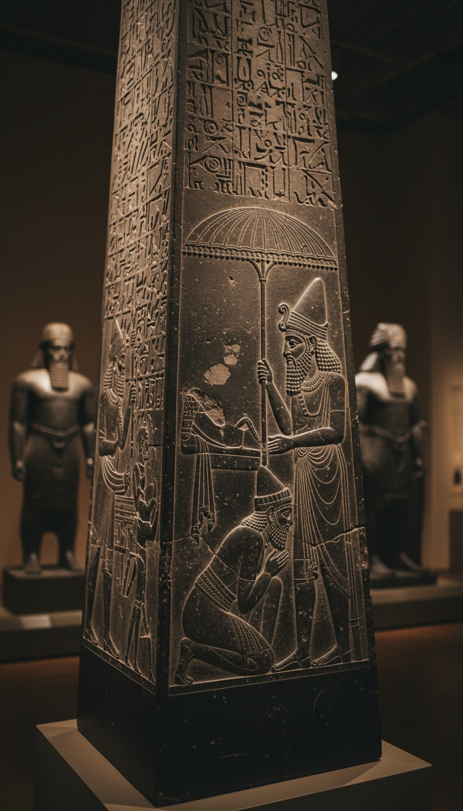

King Jehu is the only Israelite king anyone alive has ever seen, and the stone that shows him has his forehead pressed into the dirt at the feet of Assyria.
That stone is the Black Obelisk of Shalmaneser III. It stands in Room 6 of the British Museum in London, museum number 118885. It is about two meters of polished black limestone, carved around 825 BC. Millions of visitors walk past it every year. Almost none of them know that the Bible's own avenger is kneeling on its second row.

The Pillar Assyria Built to Brag
Shalmaneser III ruled Assyria from 859 to 824 BC, and he was at war for nearly every one of those years. Near the end of his reign his scribes raised a four-sided pillar in the heart of Kalhu, the city we now call Nimrud, on the Tigris in northern Iraq.
The obelisk carries five registers of carved panels on each face, twenty scenes in total. Each register shows a conquered people hauling gifts to the king. Bactrian camels come from Gilzanu, elephants and apes from Musri, and gold from a king of Israel.
Above the panels runs a cuneiform account of thirty-one years of military campaigns. The whole thing is a trophy case in stone, and it was built for one job: telling the world who kneels to Assyria.
Austen Henry Layard dug it out of the central mound at Nimrud in 1846. It came up intact, with every panel and every line of cuneiform in place and the kneeling king untouched. He floated it down the Tigris on a raft, and it reached London in 1848.
The Man With His Face in the Dirt
The second register from the top shows a bearded man in a soft pointed cap and a fringed robe. He is on his knees with his forehead on the ground. Shalmaneser stands over him under a royal parasol with a cup in his hand. Behind the kneeling figure, Israelite porters wait in line with the goods.
The caption carved above the scene is blunt: "Tribute of Iaua, son of Humri." Iaua is Jehu and Humri is Omri. In 1851 the Irish clergyman Edward Hincks cracked the name, and the first face of a Bible king anyone had ever seen turned out to be a face pointed at the floor.
Some scholars insist the kneeling man is an envoy standing in for Jehu. The monument itself answers them. Shalmaneser commissioned this pillar for a single purpose, which was to put kings on their knees in front of everyone who entered Kalhu. An envoy on his knees proves nothing, while a king on his knees is a trophy, and the caption names the king.
The Tribute List, Item by Item
The inscription lists exactly what Jehu handed over: silver, gold, a golden bowl, a golden vase with a pointed bottom, golden tumblers, golden buckets, tin, a staff for the king's hand, and wooden spears.
A staff for the king's hand is a scepter. A ruler hands his scepter to the man he now serves. With that single line, the anointed king of Israel goes on the record as an Assyrian vassal.
Shalmaneser's annals date the payment to his eighteenth year, 841 BC. He had just smashed Hazael of Damascus at Mount Senir, the range we call Hermon. Then he marched to the mountain of Ba'li-ra'si above the sea and collected tribute from Tyre, from Sidon, and from Jehu. Two Phoenician ports and the king of Israel paid the same man in the same season.
What Second Kings Chose to Leave Out
Second Kings, chapters nine and ten, gives Jehu the full hero treatment. A young prophet sent by Elisha pours oil on his head in a back room at Ramoth-Gilead and orders him to strike down the house of Ahab.
Jehu carries out the order in three strokes. He shoots an arrow through King Joram's heart outside Jezreel. He has Queen Jezebel thrown from a window and trampled under his horses. He has the seventy sons of Ahab beheaded and their heads stacked in two piles at the city gate.
Then in Second Kings 10:30, God speaks to him directly: "thou hast done well in executing that which is right in mine eyes." The text gives Jehu twenty-eight years on the throne and a dynasty that lasts four generations.
Assyria never appears in either chapter. The only crack in the story comes at 10:32: "In those days the LORD began to cut Israel short." The writer blames Hazael of Syria for it. That is the same Hazael Shalmaneser had just crushed in the year Jehu bowed.
The man who wiped the house of Omri off the earth is carved forever as the son of Omri, with his face in the dirt.
Son of the Dynasty He Butchered
This is the detail that should stop every reader cold. Omri founded the dynasty, Ahab was Omri's son, and Joram was Omri's grandson. Jehu ended that bloodline with an arrow and seventy severed heads.
The Assyrian stone calls him the son of Omri anyway.
Scholars answer that "son of Omri" was Assyrian shorthand for whoever sat on the throne in Samaria, the capital Omri built. Take that answer and follow it through. The prophets' history says God erased the house of Omri, yet the superpower of the age still filed Israel under Omri's name. The Assyrians called the kingdom Bit-Humri, the House of Omri, for more than a century afterward. That makes two records and two realities, and the one carved in the ninth century BC is the one that kept Omri's name alive.
The Kurkh Monolith, also in the British Museum, proves how much the Bible left on the cutting room floor. It names "Ahab the Israelite" fielding 2,000 chariots and 10,000 soldiers at the Battle of Qarqar in 853 BC, more chariots than any other king on the field. Second Kings skips the biggest battle of Ahab's life entirely.
The Second Stone That Rewrites the Story
In 1993, Avraham Biran's team at Tel Dan in northern Israel pulled a broken basalt stele out of an ancient wall. It now sits in the Israel Museum in Jerusalem. Its Aramaic text is the first inscription outside the Bible to name the "House of David."
Its author is Hazael of Damascus. He boasts that he killed the king of Israel, son of Ahab, and the king of the House of David. Those are Joram and Ahaziah, the same two kings.
Second Kings 9 credits both of those kills to Jehu. Hazael carved them as his own. Shalmaneser carved Jehu as his servant. On both foreign stones, Jehu is the junior partner.
Read the three sources together and a different coup comes into focus. A general kills two kings whose deaths Damascus claims for itself. The moment Damascus is broken, he runs to Assyria with a scepter in his hands. That is a man trading one master for another, and Second Kings rewrote it as a holy war.
So line up the receipts. The Bible crowns Jehu as God's chosen avenger. An Assyrian pillar shows him face down, paying with his own scepter. An Aramaean stele takes his kills for its own king. Three sources give three versions of one man, and the only one with his picture on it shows him bowing.
The scribes who wrote Second Kings knew Assyria well. In later chapters they name Tiglath-Pileser, Shalmaneser V, and Sennacherib, along with their armies, their sieges, and their demands. They knew exactly who held Israel's leash in 841 BC, and they left it out. If they could cut the most humiliating day of Jehu's reign, what did they cut from the kings who came before him? Name the Bible king you think still has a stone waiting in the ground.
Before you go
7 books the Vatican doesn't want you reading. Free PDF — the texts they cut, with sources. Joined by 300+ Inner Circle members.
No spam. Unsubscribe anytime.
Go deeper
The Hidden Canon, Vol. I — Enoch. Jubilees. Thomas. Mary. Judas. 90 pages, 14 chapters, every receipt cited. The books your Bible quietly removed.
Read the Canon →Books that informed this investigation
As an Amazon Associate, Hidden Epoch earns from qualifying purchases. Cost to you: nothing.
Research safely
The VPN we use to research without being tracked. First 3 months free.
Get NordVPN →